259개 · npm run assets:index 로 다시 만든다. 앱에는 들어가지 않는다.
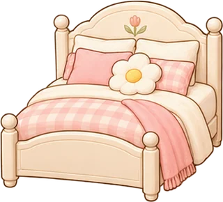
cream_bed
FLOOR · furniture/00
cloud_bed
FLOOR · furniture/01
wood_bed
FLOOR · furniture/02
daybed
FLOOR · furniture/03
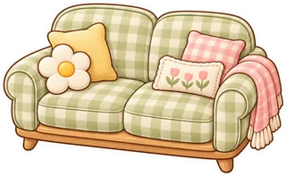
check_sofa
FLOOR · sofa/00
pink_sofa
FLOOR · furniture/04
sage_chair
FLOOR · furniture/05
vintage_sofa
FLOOR · furniture/06
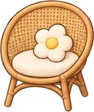
rattan_chair
FLOOR · furniture/07
round_stool
FLOOR · furniture/08
mushroom_stool
FLOOR · furniture/09
work_chair
FLOOR · furniture/10
reading_chair
FLOOR · furniture/11
acrylic_chair
FLOOR · furn2/00
wood_desk
FLOOR · furniture/12
window_desk
FLOOR · furniture/13
cafe_table
FLOOR · furn2/13
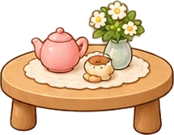
tea_table
FLOOR · furniture/15
vintage_side_table
FLOOR · furniture/16
star_side_table
FLOOR · sofa/01
small_nightstand
FLOOR · furn2/01
drawer_nightstand
FLOOR · furn2/02
mini_shelf
FLOOR · furniture/18
low_shelf
FLOOR · furniture/21
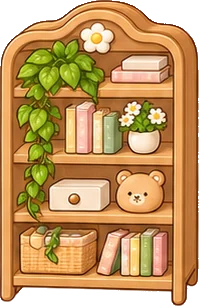
full_shelf
FLOOR · furn2/03
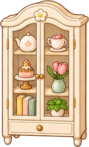
glass_cabinet
FLOOR · furn2/04
small_cabinet
FLOOR · extra/03
cream_drawer
FLOOR · furniture/19
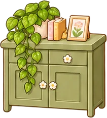
sage_cabinet
FLOOR · furn2/06
rattan_storage
FLOOR · furn2/05
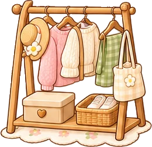
small_hanger
FLOOR · furn2/07
coat_rack
FLOOR · furn2/08
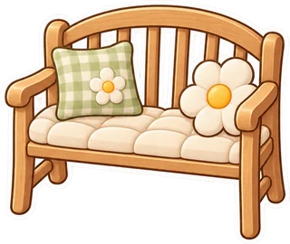
wood_bench
FLOOR · sofa/02
window_bench
FLOOR · furn2/09
beanbag
FLOOR · extra/00
pink_beanbag
FLOOR · furniture/23
floor_chair
FLOOR · furn2/10
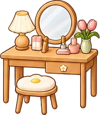
vanity
FLOOR · furn2/11
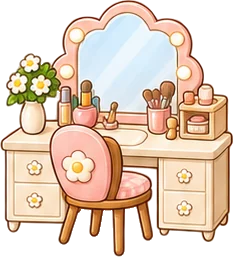
round_vanity
FLOOR · furn2/12
mini_table
FLOOR · extra/01
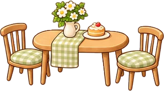
duo_table
FLOOR · furn2/15
kitchen_shelf
FLOOR · furn2/16
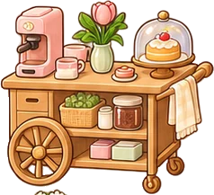
home_cafe_cart
FLOOR · furn2/17
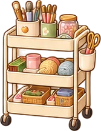
trolley
FLOOR · furn2/18
record_cabinet
FLOOR · furn2/20
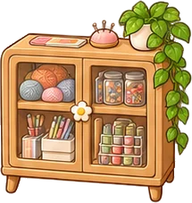
craft_cabinet
FLOOR · furn2/19
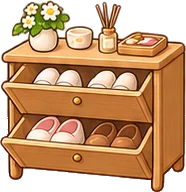
shoe_cabinet
FLOOR · furn2/17
entry_bench
FLOOR · furn2/21
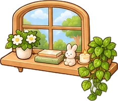
window_ledge
WINDOW · furn2/22
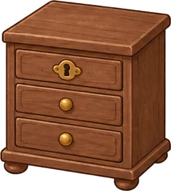
secret_drawer
FLOOR · extra/04
floor_lamp
FLOOR · light/00
mushroom_lamp
TABLETOP · light/01
cloud_light
TABLETOP · light/02
moon_light
TABLETOP · light/03
star_lamp
TABLETOP · light/04
vintage_lamp
TABLETOP · light/05
green_stand
FLOOR · light/06
pink_glass_lamp
TABLETOP · light/07
reading_light
TABLETOP · light/08
candle_light
TABLETOP · lamps/02
sunset_lamp
TABLETOP · lamps/00
raindrop_light
HANGING · lamps/01
bud_lamp
TABLETOP · lamps/03
paper_lantern
HANGING · lamps/04
neon_star
TABLETOP · lamps/05
firefly_jar
TABLETOP · light/09
star_projector
FLOOR · lamps/06
moon_globe
TABLETOP · magic/28
cat_lamp
TABLETOP · lamps/07
dawn_lamp
TABLETOP · lamps/08
small_monstera
TABLETOP · living/02
big_monstera
FLOOR · living/00
succulent
TABLETOP · living/03
mini_cactus
TABLETOP · living/04
bunny_cactus
TABLETOP · living/05
rubber_tree
FLOOR · living/01
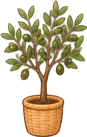
olive_tree
FLOOR · living/06
window_ivy
TABLETOP · plants/11
pothos
TABLETOP · living/08
herb_pot
TABLETOP · plants/00
basil_pot
TABLETOP · plants/01
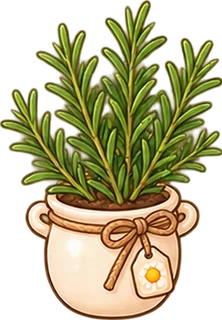
rosemary_pot
TABLETOP · plants/02
lavender_pot
TABLETOP · plants/03
yellow_tulip
TABLETOP · plants/04
pink_tulip
TABLETOP · plants/05
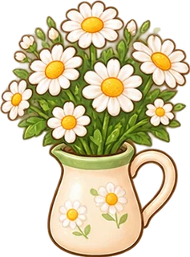
white_daisy
TABLETOP · plants/06
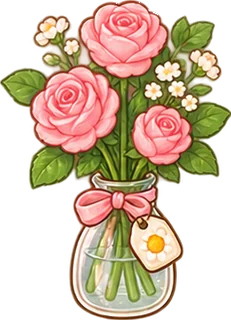
rose_vase
TABLETOP · plants/07
wildflowers
TABLETOP · plants/08
baby_breath
TABLETOP · plants/09
sunflower
TABLETOP · plants/10
sprout_jar
TABLETOP · plants/11
clover
TABLETOP · plants/12
night_flower
TABLETOP · plants/13
star_pot
TABLETOP · extra/05
mushroom_pot
TABLETOP · plants/14
cream_rug
RUG · light/10
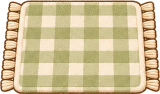
check_rug
RUG · fabric/00
pink_cloud_rug
RUG · light/11
sage_rug
RUG · light/12
sunlight_rug
RUG · fabric/01
raindrop_rug
RUG · light/13
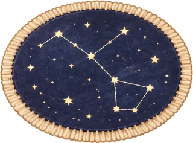
constellation_rug
RUG · extra/02
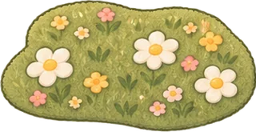
flower_rug
RUG · light/15
mushroom_rug
RUG · fabric/02
cat_paw_rug
RUG · fabric/03
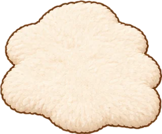
white_rug
RUG · fabric/04
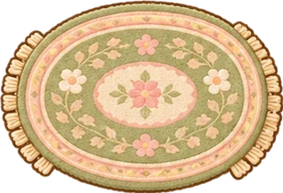
persian_rug
RUG · fabric/05
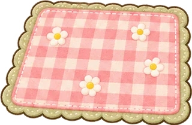
picnic_mat
RUG · fabric/06
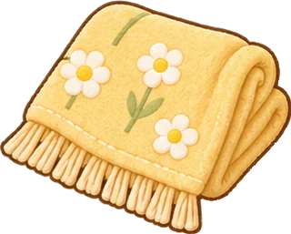
small_blanket
DECOR · fabric/07
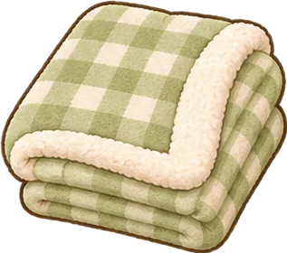
check_blanket
DECOR · fabric/08
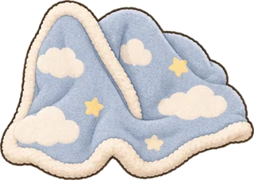
cloud_blanket
DECOR · fabric/09
yellow_cushion
DECOR · fabric/10
sleepy_bear_cushion
DECOR · light/16
cat_cushion
DECOR · light/17
star_cushion
DECOR · fabric/11
my_mug
TABLETOP · daily/02
glass_teacup
TABLETOP · daily/03
small_tumbler
TABLETOP · daily/00
water_bottle
TABLETOP · daily/01
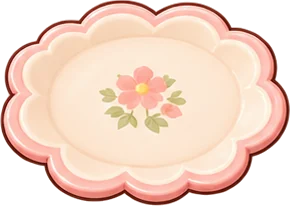
flower_plate
TABLETOP · daily/04
toast_plate
TABLETOP · daily/05
wood_tray
TABLETOP · daily/08
rattan_basket
TABLETOP · daily/09
laundry_basket
TABLETOP · daily/06
small_bin
TABLETOP · daily/07
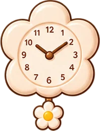
cream_clock
TABLETOP · daily/10
vintage_alarm
TABLETOP · daily/11
desk_calendar
TABLETOP · daily/12
small_candle
TABLETOP · daily/13
rainy_candle
TABLETOP · daily/17
matchbox
TABLETOP · daily/18
small_umbrella
TABLETOP · daily/14
clear_umbrella
TABLETOP · daily/15
umbrella_stand
TABLETOP · daily/16
eco_bag
TABLETOP · bags/00
small_pouch
TABLETOP · bags/04
lucky_keyring_c
TABLETOP · bags/08
cloud_keyring
TABLETOP · bags/09
moon_keyring_c
TABLETOP · bags/10
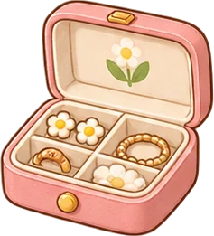
jewel_box
TABLETOP · bags/11
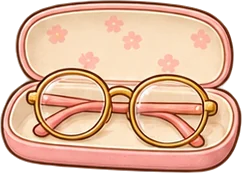
glasses_case
TABLETOP · bags/13
vintage_camera
TABLETOP · bags/14
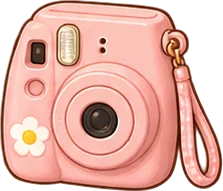
instant_camera
TABLETOP · bags/15
film_roll
TABLETOP · bags/16
headphones_c
TABLETOP · bags/17
small_radio
TABLETOP · living/28
turntable
TABLETOP · bags/19
record
TABLETOP · bags/20
hand_mirror
TABLETOP · bags/18
small_comb
TABLETOP · bags/21
unfinished_novel
TABLETOP · books/00
thick_essay
TABLETOP · books/01
poem_book
TABLETOP · books/02
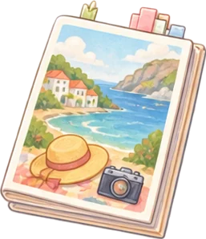
travel_magazine
TABLETOP · books/03
fashion_magazine
TABLETOP · books/04
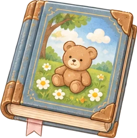
old_picture_book
TABLETOP · books/05
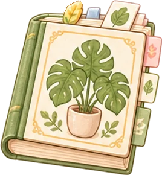
plant_book
TABLETOP · books/06
star_book
TABLETOP · books/07
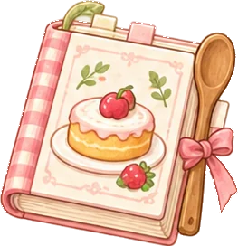
cook_book
TABLETOP · books/08
small_notebook
TABLETOP · books/09
checklist_notebook
TABLETOP · books/10
secret_diary
TABLETOP · books/11
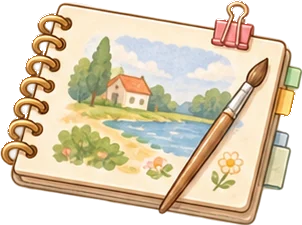
sketchbook
TABLETOP · books/12
pencil_case
TABLETOP · books/13
fountain_pen
TABLETOP · books/15
pencil_cup
TABLETOP · books/14
sticky_notes
TABLETOP · books/17
letter
TABLETOP · books/18
postcards
TABLETOP · books/19
old_map
TABLETOP · books/20
small_pot
TABLETOP · food/16
frying_pan
TABLETOP · food/17
cutting_board
TABLETOP · food/18
oven_mitt
TABLETOP · food/19
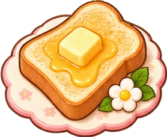
toast_butter
TABLETOP · food/00
DISPLAY_ONLY
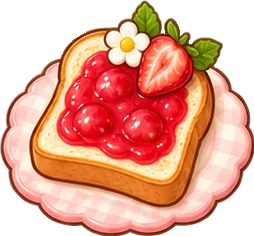
jam_toast
TABLETOP · food/01
DISPLAY_ONLY
pancake
TABLETOP · food/02
DISPLAY_ONLY
croissant
TABLETOP · food/03
DISPLAY_ONLY
cake_slice
TABLETOP · food/04
strawberry_cake
TABLETOP · food/05
cookie_plate
TABLETOP · food/06
apple_basket
TABLETOP · food/07
tangerine_basket
TABLETOP · food/08
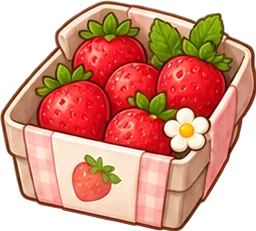
strawberry_pack
TABLETOP · food/09
coffee_cup
TABLETOP · food/10
DISPLAY_ONLY
latte_cup
TABLETOP · food/11
DISPLAY_ONLY
warm_tea
TABLETOP · food/12
DISPLAY_ONLY
lemonade
TABLETOP · food/13
DISPLAY_ONLY
milk_bottle
TABLETOP · food/14
DISPLAY_ONLY
cereal_bowl
TABLETOP · food/15
DISPLAY_ONLY
small_laptop
TABLETOP · hobby/00
monitor
TABLETOP · hobby/01
keyboard
TABLETOP · hobby/02
mouse
TABLETOP · hobby/03
tablet
TABLETOP · hobby/04
controller
TABLETOP · hobby/05
handheld
TABLETOP · hobby/07
speaker
TABLETOP · hobby/06
guitar
FLOOR · hobby/08
mini_piano
TABLETOP · hobby/11
knitting_basket
FLOOR · hobby/09
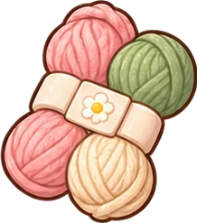
yarn
FLOOR · hobby/10
art_box
FLOOR · hobby/12
easel
FLOOR · hobby/13
palette
FLOOR · hobby/14
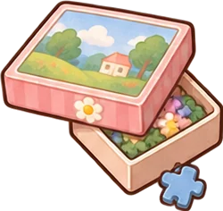
puzzle_box
FLOOR · hobby/15
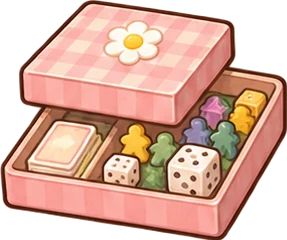
board_game
FLOOR · hobby/17
yoga_mat
RUG · hobby/18
chalk_bag
FLOOR · hobby/19
sneakers_c
FLOOR · hobby/20
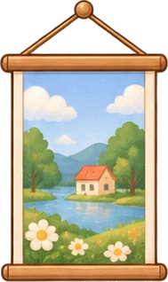
landscape_poster
WALL · wall/00
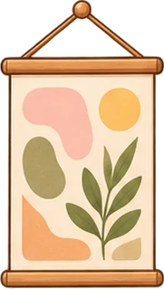
abstract_poster
WALL · wall/01
flower_poster
WALL · wall/02
moon_poster
WALL · wall/03
movie_poster
WALL · wall/04
small_frame
WALL · wall/05
friend_photo
WALL · wall/06
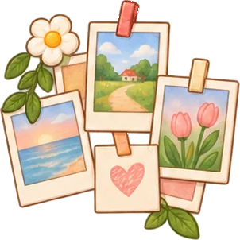
polaroid_wall
WALL · wall/11
wall_clock
WALL · wall/12
cloud_mobile
HANGING · wall/10
star_mobile
HANGING · wall/13
garland
WALL · wall/14
fairy_lights
WALL · wall/15
wall_mirror
WALL · wall/16
cork_board
WALL · wall/19
star_piece
DECOR · magic/03
DISPLAY_ONLY
stardust_jar
DECOR · magic/00
moondust_jar
DECOR · magic/01
shiny_pebble
DECOR · magic/04
DISPLAY_ONLY
clover_bottle
DECOR · magic/02
cloud_piece
DECOR · magic/06
DISPLAY_ONLY
dream_piece
DECOR · magic/07
DISPLAY_ONLY
dawn_crystal
DECOR · magic/08
DISPLAY_ONLY
sunset_crystal
DECOR · magic/05
DISPLAY_ONLY
raindrop_crystal
DECOR · magic/09
DISPLAY_ONLY
moon_ticket_c
DECOR · magic/10
DISPLAY_ONLY
night_ticket_c
DECOR · magic/11
DISPLAY_ONLY
star_music_box
DECOR · magic/12
sleeping_star
DECOR · magic/13
little_moon
DECOR · magic/14
t_wood_star
TABLETOP · trophy/00
t_hundred_stars
TABLETOP · magic/27
t_adventure_book
TABLETOP · trophy/01
t_thousand_stars
TABLETOP · trophy/02
t_dragon
TABLETOP · magic/26
t_golden_pen
TABLETOP · magic/21
t_shoe_trophy
TABLETOP · magic/25
t_golden_broom
TABLETOP · magic/20
t_shiny_palette
TABLETOP · magic/29
t_moon_shard
TABLETOP · trophy/03
t_heart_bottle
TABLETOP · trophy/04
m_wood
DECOR · magic/15
MATERIAL_ONLY
m_cloth
DECOR · magic/16
MATERIAL_ONLY
m_glass
DECOR · magic/17
MATERIAL_ONLY
m_metal
DECOR · magic/18
MATERIAL_ONLY
m_paper
DECOR · magic/19
MATERIAL_ONLY
m_leaf
DECOR · magic/22
MATERIAL_ONLY
m_petal
DECOR · magic/23
MATERIAL_ONLY
m_stone
DECOR · magic/24
MATERIAL_ONLY